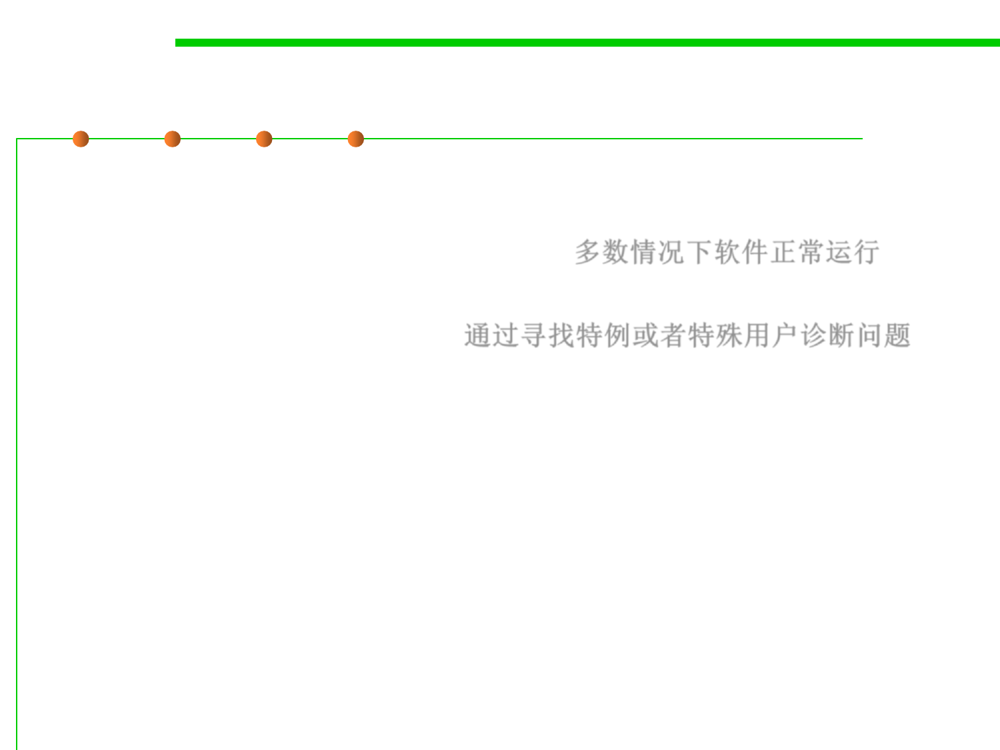

7.4 Debugging
Diagnosis stratagem 4: Focus on the differences
▪ Your software normally works. So, the feature affected by the bug
you’re trying to diagnose probably works correctly in almost all
situations or for almost everyone else. 多数情况下软件正常运行
▪ So, what you’re looking for is something that makes this particular
situation or customer special. 通过寻找特例或者特殊用户诊断问题
▪ Often these differences come to light when trying to reproduce the
problem.
▪ Does it happen in only one particular environment? In that case,
the problem is most likely in environment-specific code.
– E.g., Does it happen only with large input files? Most likely you’re looking
for a resource leak or a limit being exceeded.